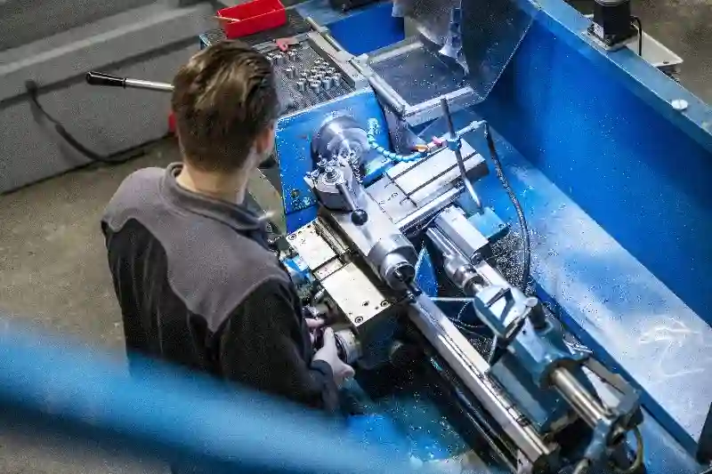
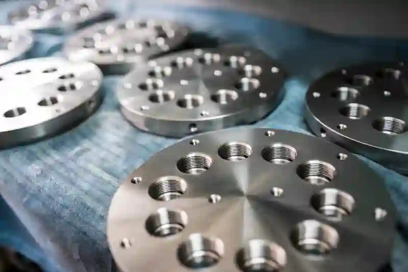
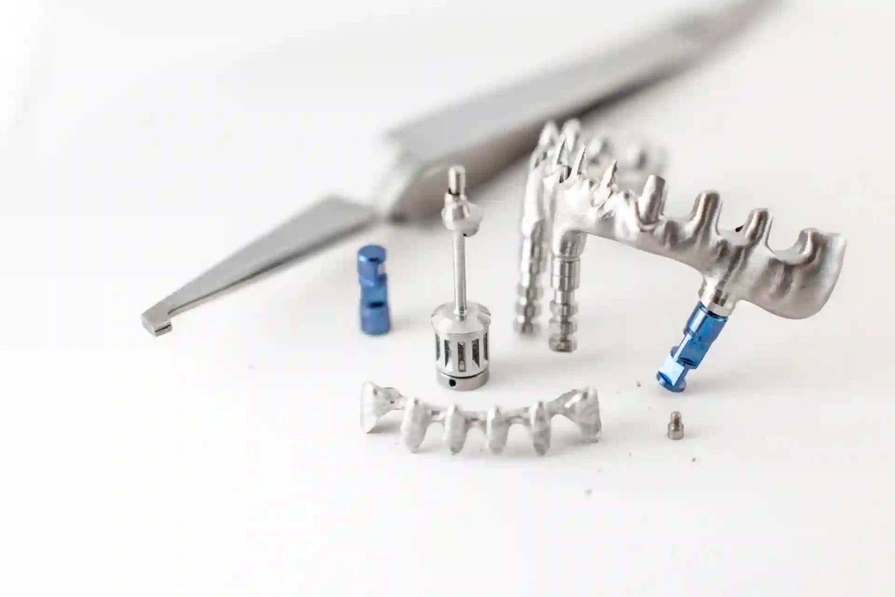
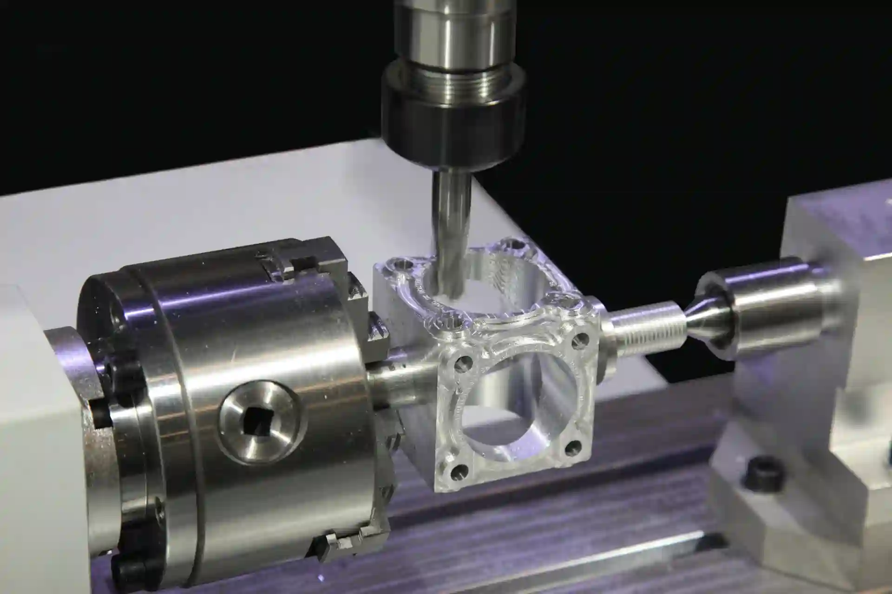

Medikal Parça İmalatı – Medikal ve Biyomekanik Üretim ÇözümleriHassas CNC İşleme ile Üstün Kalite
Medikal ve biyomekanik sektörlerinde kullanılan her bir bileşen, insan sağlığıyla doğrudan ilişkili olduğu için en küçük hata toleransına bile yer yoktur. Bu nedenle üretim sürecinde kullanılan makine parkının teknik kapasitesi, mühendislik yaklaşımı, malzeme bilgisi ve kalite kontrol süreçleri hayati önem taşır. Aymaksan Makine olarak bu alanda sunduğumuz medikal parça imalatı çözümleri; yüksek hassasiyet gerektiren ortopedik implantlardan biyomekanik test ekipmanı bileşenlerine kadar geniş bir yelpazede güvenilir üretim yapmamıza olanak tanır.
İşleme teknolojilerimiz, biyouyumlu metallerin yüzey pürüzlülüğü, tolerans kararlılığı, geometrik hassasiyet ve tekrarlanabilirlik ilkelerine göre optimize edilir. Bu yaklaşım sayesinde hem küçük çaplı prototip taleplerinde hem de seri üretim ihtiyaçlarında sektör standartlarının üzerinde bir performans sunarız. Aşağıdaki bölümlerde, medikal ve biyomekanik sektörüne sağladığımız tüm üretim kabiliyetlerini, kullanılan malzemeleri, makinelerimizin teknik üstünlüklerini ve kalite güvence mekanizmalarımızı detaylı bir şekilde inceleyebilirsiniz.
Medikal Sektöründe Hassas CNC İşleme Gereksinimleri
Medikal sektör, üretim süreçlerinde kullanılan ham maddeden yüzey kalitesine, geometrik hassasiyetten sterilizasyon sonrası stabiliteye kadar yüzlerce kontrol parametresi gerektiren en zorlu mühendislik alanlarından biridir. Bu nedenle Aymaksan Makine olarak üretimin her aşamasında uluslararası uyumluluk odaklı bir yaklaşım benimseriz.
Örneğin medikal parça imalatı ve medikal cihaz komponentleri CNC işleme süreçlerinde, her parçanın standart sapma değerleri sürekli izlenir ve kritik bölgelerde gerekli görüldüğünde okuma yoğunluğu artırılır. Medikal uygulamalarda kullanılan parçaların büyük bir bölümü paslanmaz çelik, titanyum, kobalt-krom alaşımları ve özel biyouyumlu metallerden oluşur. Bu malzemelerin işlenmesi, klasik mekanik üretime göre çok daha gelişmiş kesici takım stratejileri, mil devri optimizasyonu ve soğutma teknikleri gerektirir.
Aymaksan’ın sahip olduğu dik işleme merkezleri ve CNC tornalar, tıbbi ekipmanlarda ihtiyaç duyulan mikro hassasiyet seviyelerini karşılayacak şekilde yapılandırılmıştır. Bu makinelerle gerçekleştirdiğimiz tıbbi ekipman parçaları için talaşlı imalat hizmeti, yüzey pürüzlülüğü ve boyutsal tutarlılık açısından sektördeki yüksek gereksinimlere tam uyumludur.


Ortopedik İmplant ve Cerrahi Alet Üretiminde Mühendislik Yaklaşımı
Ortopedik uygulamalarda kullanılan implantlar, protez bileşenleri ve cerrahi aletler; insan dokusuyla doğrudan temas ettiği için biyomekanik dayanım, yüzey sertliği ve kimyasal uyumluluk açısından son derece hassas bir üretim süreci gerektirir. Bu nedenle firmamızda geliştirilen medikal parça imalatı ve ortopedik implant parçaları üretimi çözümleri, malzeme seçimi ve geometrik doğruluk prensipleri üzerine inşa edilmiştir.
İmplantlarda kullanılan titanyum alaşımları işleme sırasında yüksek ısı birikmesine neden olabilir. Bu risk, yüzey kalitesini ve yapısal bütünlüğü olumsuz etkileyebileceğinden, üretim proseslerimizde özel soğutma stratejileri ve kesici takım açıları tasarlanır. Bu yaklaşım, firmamızın cerrahi alet imalatı CNC tornalama kabiliyetini güçlendirirken aynı zamanda her bir ürünün uzun ömürlü ve güvenilir olmasını sağlar.
Özellikle minimal invaziv cerrahi cihazlarda daha ince toleranslar gereklidir. Bu nedenle Aymaksan Makine olarak küçük çap mikro işleme kabiliyetlerimizi geliştirerek cerrahi uygulamalara özel seri üretim süreçlerinde uluslararası kalite seviyelerine ulaşmış bulunmaktayız.
Titanyum ve Biyouyumlu Metal İşleme Uzmanlığı
Medikal cihazların önemli bir kısmı titanyum, paslanmaz çelik 316L, kobalt-krom gibi biyouyumlu metallerden üretilir. Bu alaşımlar yüksek dayanım ve düşük ağırlık avantajına sahip olsalar da işlenmesi oldukça zordur. Kesici uç geometrileri, ilerleme hızları ve devrin doğru belirlenmemesi mikro çatlak, yüzey bozulması veya tolerans sapması gibi kritik hatalara yol açabilir.
Bu nedenle Aymaksan Makine’nin medikal parça imalatı ve titanyum medikal parça üretimi süreçlerinde kullanılan tüm makineler, titreşim azaltıcı gövde yapıları, yüksek mil hızı kapasitesi ve hassas soğutma ekipmanlarıyla optimize edilmiştir. Ayrıca işleme yapılan ortamın sıcaklık değişkenlikleri sürekli kontrol altında tutularak boyutsal kararsızlık riskleri minimuma indirilir.
Biyouyumlu metallerle ilgili bir diğer önemli konu da yüzey pürüzlülüğü değerleridir. Özellikle ortopedik implantlarda pürüzlülük, doku uyumluluğu ve implantın kemikle bütünleşmesi açısından kritik bir parametredir. Bu nedenle Aymaksan olarak biyouyumlu metal işleme çözümleri sunarken yüzey kalitesi her zaman temel odak noktamızdır.
Biyomekanik Sistemlerde Hassas Üretimin Önemi
Biyomekanik mühendisliği, anatomik hareketleri modelleyerek protez, aparat, test cihazı ve ölçüm sistemlerinin tasarımını mümkün kılar. Bu alanda kullanılan bileşenlerin her biri çok düşük tolerans aralıklarında üretilmek zorundadır. Aksi halde test sonuçları yanıltıcı olabilir veya prototip cihazların stabilite performansı düşebilir.
Bu nedenle firmamız medikal parça imalatı ve biyomekanik parça imalatı projelerinde 3 eksenden 5 eksene kadar genişleyen makine parkımızı kullanarak çok eksenli işleme çözümleri sunar. Bu çözüm yaklaşımı hem karmaşık geometrilerin yüksek doğrulukla işlenmesini sağlar hem de seri üretim proseslerinde süre ve maliyet avantajı oluşturur.
Örneğin, protez bağlantı elemanlarında kullanılan iç diş yapılarının kusursuz işlenmesi gereklidir. Buradaki en küçük hata bile kullanım sırasında aşınma, gevşeme veya kırılmaya yol açabilir. Bu nedenle firmamız biyomekanik cihaz bileşenleri CNC işleme süreçlerinde özel ölçüm aparatları ve CMM cihazlarıyla doğrulama işlemlerini standartlaştırmıştır.
Mikro Hassas İşleme ile Biyomekanik Bileşenlerde Üstün Tekrarlanabilirlik

Biyomekanik uygulamalarda özellikle sensör yuvaları, küçük çaplı bağlantı noktaları ve hareket aktarma mekanizmaları milimetrik değil, mikron seviyesinde hassasiyet gerektirir. Bu sebeple Aymaksan Makine’nin mikro işleme altyapısı, mikro hassas işleme biyomekanik ihtiyaçlarına yönelik optimize edilmiştir.
Bu yaklaşım sayesinde klinik test cihazları, biyomekanik hareket analiz sistemleri ve kişiye özel protezler için gerekli olan bileşenler tekrarlanabilir şekilde üretilir. Yaşamsal önemi olan bu parçaların doğruluğunda sağlanan süreklilik, firmanın medikal ve biyomekanik alanındaki uzmanlığının en önemli göstergesidir.
Projeni Başlat
Medikal Sektöre Özel Hassas CNC Üretim Yetenekleri
Medikal endüstrisinde her bir parçanın hata payı minimum seviyede olmalı ve üretim süreci tamamen izlenebilir bir yapıda ilerlemelidir. Aymaksan Makine’nin gelişmiş üretim altyapısı, bu gereksinimleri karşılayacak düzeyde hassasiyet sunar. Özellikle medikal parça imalatı ve medikal sektöre özel hassas CNC üretim süreçlerinde uygulanan ölçüm protokolleri, parçanın yalnızca geometrik olarak değil, aynı zamanda yüzey kalitesi açısından da standarda uygun olmasını sağlar.
Kullandığımız işleme stratejileri, işlenen parçanın karmaşıklığına göre sürekli optimize edilir. Çok eksenli işleme, yenilikçi kesici takım teknolojileri ve CAD/CAM tabanlı simülasyon desteği sayesinde üretim süreci hatasız şekilde modellenir. Böylece hem seri üretimde hem de düşük adetli projelerde yüksek tutarlılık elde edilir. Bu özellik, medikal cihaz üreticileri için kritik bir rekabet avantajı sağlar.
Medikal Gövde, Blok ve Gözenekli Yapı Parçalarında İşleme Teknikleri
Medikal cihazların büyük bir kısmı blok metal gövdeler ya da yüksek mukavemetli parçalar üzerinden inşa edilir. Bu nedenle bu tip bileşenlerin üretiminde kullanılan işleme yöntemi, parça performansını doğrudan etkileyen temel faktörlerden biridir. Aymaksan Makine olarak medikal parça imalatı ve medikal gövde ve blok parçalarında dik işleme kabiliyetimiz, geometrik bütünlüğü maksimum seviyede koruyacak şekilde yapılandırılmıştır.
Gözenekli yapıya sahip kemik adaptasyon bileşenleri veya gözenek kontrollü implant yapıları üretiminde yüzey kalitesi kadar iç yapının stabilitesi de önemli bir kriterdir. Bu nedenle işleme sırasında kesme kuvvetleri minimuma indirilir ve termal deformasyon riskine karşı özel soğutma stratejileri uygulanır. Üretilen her bileşen, medikal sektörün gerektirdiği tolerans standartlarına uygun olarak ölçülür.
Çok Eksenli CNC İşleme ile Karmaşık Medikal Bileşen Üretimi
Medikal sektörde kullanılan birçok parça, insan vücudunun doğal anatomisine uyum sağlayacak şekilde karmaşık geometrilere sahiptir. Bu nedenle üretim aşamasında 3 eksenli makineler çoğu zaman yeterli olmayabilir. Aymaksan Makine’nin sahip olduğu çok eksenli altyapı, bu gereksinimi karşılamak üzere geliştirilmiştir.
Bu kapsamda sunduğumuz medikal parça imalatı ve çok eksenli CNC medikal işleme çözümleri, karmaşık yüzey geometrileri, çok yönlü delik yapıları, kavisli gövde tasarımları ve derin kanal işleme gibi zorlu üretim gereksinimlerini karşılamak için idealdir. Ayrıca bu yöntem, işleme sürelerini kısaltırken hata olasılığını da önemli ölçüde azaltır.
Çok eksenli işleme, özellikle kişiye özel implant tasarımlarında ve karmaşık cerrahi ekipman üretimlerinde en yüksek hassasiyet seviyelerinin korunmasını sağlar. Bu avantaj, biyomekanik test ekipmanlarının üretiminde de önemli bir rol oynar.
Prototip Üretimi ve Ar-Ge Süreçlerinde Mühendislik Desteği
Medikal cihaz geliştirme süreçlerinde prototip aşaması, ürünün fonksiyonel doğrulamasını yapmak için kritik öneme sahiptir. Bu nedenle Aymaksan Makine, mühendislik destek süreçlerini yalnızca üretim aşamasıyla sınırlamaz. Proje başlangıcından prototip üretimine, test süreçlerinden seri üretime kadar tüm adımlar, teknik danışmanlık hizmetlerimizle desteklenir.
Firmamızın medikal parça imalatı ve medikal prototip geliştirme ve Ar-Ge desteği kapsamında sunduğu hizmetler; tasarım doğrulama, malzeme seçimi analizi, üretilebilirlik değerlendirmesi ve numune üretimi gibi önemli adımları kapsar. Bu yaklaşım, hem ürün geliştirme süresini kısaltır hem de tasarım hatalarının erken aşamada tespit edilmesini sağlar.
Özellikle biyomekanik test cihazları ve ölçüm aparatları gibi yüksek hassasiyet gerektiren uygulamalarda, prototip üretim aşaması kritik bir rol oynar. Bu nedenle tüm prototip parçalar, aynı seri üretim disiplinine bağlı kalınarak üretilir.
Kaynak, Montaj ve Son İşlem Operasyonlarında Medikal Standartlara Uygunluk
Medikal cihazların üretiminde bazı bileşenler yalnızca CNC işleme ile değil, kaynak ve montaj gibi ek işlemlerle tamamlanır. Bu aşamada kullanılan kaynak yöntemi, malzemenin biyouyumluluğunu bozmayacak şekilde seçilmelidir. Bu nedenle Aymaksan Makine, titanyum ve paslanmaz çelik gibi hassas alaşımlar için özel kaynak teknikleri geliştirir.
Kaynak sonrası yüzey temizliği, pasivasyon işlemleri ve montaj bütünlüğü kontrolleri, medikal üretim standartlarına uygun şekilde gerçekleştirilir. Bu süreçlerin tamamı, parça performansını doğrudan etkileyen kritik faktörlerdir. Medikal cihaz gövdeleri, şase yapıları ve test ekipmanlarında uyguladığımız bu yöntemler sayesinde yüksek güvenilirlik sunarız.
Medikal parça imalatı kapsamında üretilen tüm bileşenler, biyomekanik dayanım testleri için gerekli olan yapısal bütünlüğü karşılayacak şekilde tasarlanır ve doğrulanır.
Kalite Kontrol, CMM Ölçüm ve Dokümantasyon Süreçleri

Medikal parça imalatı ve medikal ve biyomekanik üretim projelerinde kalite kontrol, üretimin ayrılmaz bir parçasıdır. Her bir parçanın ölçümleri CMM cihazlarıyla doğrulanır ve ölçüm raporları müşteriye tam şeffaflıkla sunulur. Malzeme sertlik testleri, yüzey pürüzlülüğü ölçümleri ve görsel kontroller aynı süreç içinde entegre şekilde uygulanır.
Bu doğrultuda, tedarik süreçlerinde kullanılmak üzere tam uyumlu dokümantasyon paketleri oluşturulur. Kalite raporları, ölçüm tabloları, malzeme sertifikaları ve işlem sonrası veriler müşteriye eksiksiz şekilde teslim edilir. Bu süreç, özellikle uluslararası denetimlere tabi medikal üretim firmaları için büyük avantaj sağlar.
Projeni Başlat
Biyomekanik Uygulamalar İçin Üretim Mühendisliği ve Malzeme Yönetimi
Biyomekanik alanında üretilen her bileşen; insan vücudunun doğal hareket kalıplarını, yük analizlerini ve uzun süreli dayanım gereksinimlerini karşılamak zorundadır. Bu nedenle Aymaksan Makine’nin biyomekanik üretim yaklaşımı, yalnızca CNC işleme tekniklerinden ibaret değildir. Aynı zamanda malzeme davranışı, yorulma dayanımı, yüzey pürüzlülüğü ve geometrik bütünlük gibi bilimsel parametreler dikkate alınarak mühendislik geliştirmeleri yapılır.
Bu kapsamda sunduğumuz medikal parça imalatı ve biyomekanik parça üretimi hizmetleri; protez bağlantı elemanları, hareket analiz sistemleri için sensör yuvaları, test cihazları bileşenleri ve ölçüm aparatları gibi fonksiyonel parçaların yüksek hassasiyetle üretilmesini sağlar. Bu parçaların kullanım alanları genişledikçe, geometrik karmaşıklık ve malzeme yönetiminin önemi daha da artar.
Biyomekanik sistemlerde kullanılan malzemeler çoğunlukla titanyum, paslanmaz çelik, polimer takviyeli kompozitler ve yüksek mukavemetli alaşımlardan oluşur. Bu malzemelerin her biri işleme sırasında farklı tepkiler gösterdiğinden, kesme hızları ve ilerleme değerleri özel olarak belirlenir. Bu nedenle üretim öncesi simülasyonlar yapılarak optimum işleme stratejisi oluşturulur.
Protez, Ortez ve Ortopedik Aparatlarda Hassas Üretim Süreci
Protez ve ortez cihazlarının bileşenleri, insan vücuduyla birebir uyum sağlaması gereken kritik parçalardır. Bu nedenle üretilen her bir bileşenin tolerans aralığı titizlikle belirlenir ve üretim süreci bu değerlere göre şekillendirilir. Aymaksan Makine olarak medikal parça imalatı ve protez ve ortopedik aparat üretimi projelerinde kişiye özel tasarımlara uyum sağlayacak esneklikte üretim çözümleri sunarız.
Bu parçaların tasarımında biyomekanik analizler, yük dağılımı, hareket kabiliyeti ve dayanım hesaplamaları gibi birçok mühendislik parametresi dikkate alınır. Üretim aşamasında ise yüksek tekrarlanabilirlik sağlayan CNC makineleri devreye girer. Her bir bağlantı elemanı, iç diş yapısı, mafsal noktası veya taşıyıcı gövde, uzun süreli kullanımda dahi stabil performans gösterecek şekilde işlenir.
Protez bileşenlerinde yüzey pürüzlülüğü, hareket sırasında sürtünme değerlerini doğrudan etkilediğinden, yüzey kalitesi Aymaksan Makine’nin en çok önem verdiği kriterlerden biridir. Bu nedenle tüm parçalar özel finisaj işlemleriyle optimize edilir.
Biyomekanik Test Ekipmanları ve Ölçüm Aparatlarında Üretim Uzmanlığı
Biyomekanik cihazların geliştirilmesi sırasında kullanılan test ekipmanları, ölçüm aparatları ve hareket analiz sistemleri, ürünün performansını değerlendirmek için kritik rol oynar. Bu ekipmanlarda kullanılan parçaların doğruluğu, yalnızca mekanik dayanım açısından değil, aynı zamanda bilimsel ölçüm güvenilirliği açısından da önem taşır.
Aymaksan Makine’nin medikal parça imalatı ve biyomekanik test ekipmanı komponent üretimi hizmeti, bu doğruluk ihtiyacını karşılamak için geliştirilmiştir. Test ekipmanlarında kullanılan mil, yatak yuvası, sensör adaptörü, yük hücresi gövdesi gibi parçalar mikron seviyesinde hassasiyetle üretilir. Bu sayede cihazın ölçüm kalitesi artırılır ve laboratuvar süreçlerinde tekrarlanabilir sonuçlar elde edilmesi sağlanır.
Biyomekanik test ekipmanlarında doğruluk kadar dayanım da önemlidir. Özellikle sürekli yük altında çalışan bileşenlerin üretiminde malzeme seçimi kritik rol oynar. Bu nedenle üretim süreçlerinde kullanılan tüm metaller, sertifikalı tedarikçilerden temin edilir ve her bir parça CMM cihazlarıyla doğrulandıktan sonra paketlenir.
CNC Tesisimizin Biyomekanik Üretime Sağladığı Avantajlar
Aymaksan Makine’nin sahip olduğu makine parkı, biyomekanik üretim süreçlerinde ihtiyaç duyulan tüm işleme kabiliyetlerini karşılayacak düzeydedir. CNC torna tezgahlarımız, dik işleme merkezlerimiz, kaynak-montaj alanlarımız ve kalite kontrol laboratuvarlarımız birbiriyle entegre çalışarak hem hızlı hem de hassas sonuçlar elde edilmesini sağlar.
Bu kapsamda sunduğumuz medikal parça imalatı ve biyomekanik cihaz bileşenleri CNC işleme çözümleri, karmaşık geometrilerin tekrarlanabilir şekilde üretilmesine imkân tanır. Çok eksenli işleme kabiliyeti, biyomekanik cihazlarda yer alan dar yuvalar, özel oyuklar ve kavisli yüzeylerin yüksek doğrulukla işlenmesini mümkün kılar.
Üretim sürecinin her adımında uygulanan kalite kontrol prosedürleri, sektörde kabul edilen uluslararası standartlara tam uyumludur. Aymaksan Makine, biyomekanik projelerde uzun yıllar boyunca tutarlı performans sağlayan yapıların üretimine odaklanır.
Mikro Ölçekli ve Makro Ölçekli Üretim Süreçlerinin Entegrasyonu
Biyomekanik projelerin büyük bölümünde hem mikro ölçekte hem de makro ölçekte işleme süreçleri bir arada kullanılır. Aymaksan Makine’nin geliştirdiği üretim metodolojisi, bu iki seviyeyi kusursuz şekilde entegre eder.
Bu yaklaşım, özellikle sensör sistemleri, mikro mafsal bileşenleri ve bağlantı noktaları gibi fonksiyonel detay içeren komponentlerin üretiminde avantaj sağlar. Makro ölçekteki taşıyıcı yapılar ise yüksek mukavemete ve yorulma dayanımına sahip olacak şekilde optimize edilir. Böylece üretilen her parça, biyomekanik sistemlerin uzun vadeli performansına katkı sağlar.
Projeni Başlat
Medikal ve Biyomekanik Parçalarda Tolerans Yönetimi ve Ölçü Stabilitesi
Medikal ve biyomekanik parçaların üretiminde tolerans yönetimi, ürünün performansını doğrudan belirleyen en kritik mühendislik parametrelerinden biridir. Bu nedenle Aymaksan Makine’de medikal parça imalatı içindeki her bir işleme aşaması, öngörülen tolerans değerlerinin korunmasını sağlayacak şekilde optimize edilir. Ölçü stabilitesini etkileyebilecek sıcaklık değişimleri, takım aşınması, titreşim ve kesme kuvvetleri gibi faktörler üretim öncesi analiz edilerek kontrol altında tutulur.
Bu yaklaşım, özellikle implant bağlantı yüzeylerinde ve biyomekanik test ekipmanlarında kullanılan hassas bileşenlerde büyük önem taşır. Üretilen tüm parçalar CMM cihazlarıyla ölçülerek tolerans sapması olup olmadığı doğrulanır. Böylece işleme sürecinde hedeflenen değerlerin korunması garanti altına alınır ve parçaların klinik veya laboratuvar kullanımında güvenliği artırılır. Tolerans yönetimine verdiğimiz önem, medikal ve biyomekanik sektöründeki tüm projelerde sürdürülebilir kalite elde etmemizi sağlar.
Biyouyumlu Metallerde Yüzey Pürüzlülüğü Optimizasyonu
Medikal uygulamalar için tasarlanan parçaların yüzey pürüzlülüğü, implantın kemik dokusuyla bütünleşmesinden sürtünme katsayısına kadar birçok performans parametresini etkiler. Bu nedenle Aymaksan Makine’nin üretim süreçlerinde yüzey kalitesi kontrolü kritik bir aşamadır. Özellikle titanyum, paslanmaz çelik ve kobalt-krom alaşımlarında yüzey sertliği ve pürüzlülük değerleri özel finisaj teknikleriyle optimize edilir.
Bu bağlamda sunduğumuz medikal parça imalatı ve biyouyumlu metal işleme çözümleri, yüzey pürüzlülüğü değerlerini belirlenen aralıkta tutmayı garanti eder. Bu süreçte uygulanan polisaj, mikron seviyesinde talaş kaldırma ve özel kesici takım geometrileri gibi yöntemler, medikal amaçlı parçaların uzun ömürlü olmasını sağlar. Yüzey işlemlerinin ardından yapılan ölçüm ve doğrulama prosedürleri de kalite kontrol sürecinin ayrılmaz bir parçasıdır.
Bu yaklaşım, özellikle ortopedik implantlar ve biyomekanik aparatlarda yüksek performans ve güvenilirlik sunar.
Kritik Geometrilerin CNC Üretiminde Çok Eksenli Stratejiler
Medikal ve biyomekanik uygulamalarda kullanılan birçok parça, karmaşık geometrik yapılara sahiptir. Bu tür yapılar, hem dayanım hem de fonksiyonel gereklilikleri karşılamak için çok eksenli işleme tekniklerinin kullanılmasını zorunlu kılar. Aymaksan Makine’nin sahip olduğu 4 ve 5 eksenli CNC işleme merkezleri ile bu tür zorlayıcı geometriler mükemmel bir hassasiyetle üretilir.
Bu kapsamda geliştirilen medikal parça imalatı ve çok eksenli CNC medikal işleme çözümleri, dar kanal yapıları, derin oyuklar, kavisli yüzeyler ve çok yönlü delik açma operasyonları için ideal üretim stratejileri sunar. Bu yöntem, parçanın tek bir bağlama içerisinde çok yönlü işlenmesini sağlar ve hata olasılığını en aza indirir.
Bu üretim yapısı, protez eklem parçaları, test cihazı bileşenleri ve klinik analiz sistemlerinde kullanılan mekanik elemanlar gibi kritik yapıların üretilmesinde önemli bir avantaj sağlar.
Kalite Belgeleri, Ölçüm Raporları ve Regülasyon Uyumluluğu
Uluslararası medikal sektörü, FDA, ISO 13485 ve CE gereklilikleri gibi çeşitli standartlara uyum sağlanmasını zorunlu kılar. Bu nedenle Aymaksan Makine, üretim süreçlerinde kullanılan tüm prosedürlerin belgeye dayalı ilerlemesini sağlar. Ölçüm raporları, malzeme sertifikaları, yüzey kalite analizleri ve proses dokümantasyonu, müşterilere eksiksiz olarak iletilir.
Özellikle medikal cihaz üretim zincirlerinde kullanılan parçalar için sağlanan ayrıntılı dokümantasyon, ürünün regülasyonlara uygun şekilde tedarik edilmesini sağlar. Bu nedenle firmamızın kalite kontrol süreçleri yalnızca ölçümle sınırlı değildir; aynı zamanda sektörün talep ettiği tüm raporlama kriterlerini üst seviyede karşılar.
Bu kapsamda üretilen bileşenler; klinik test süreçlerinde, biyomekanik laboratuvarlarda ve uzun ömürlü implant sistemlerinde güvenle kullanılabilecek nitelikte doğrulanır.
Ölçüm Laboratuvarımızda Uygulanan Test Prosedürleri
Aymaksan Makine’nin kalite kontrol laboratuvarında uygulanan test prosedürleri, üretimde kullanılan malzemelerin ve geometrik yapıların güvenilirliğini doğrulamak için tasarlanmıştır. CMM ölçümleri, yüzey pürüzlülüğü analizleri, profilometre testleri ve görsel kontrol metotları entegre şekilde uygulanır.
Bu yöntemler, üretilen her bir medikal veya biyomekanik bileşenin yalnızca standartlara uygun olmasını değil, aynı zamanda kullanım sırasında maksimum performans göstermesini sağlar. Bu doğrulama yaklaşımı, müşterilerin uzun vadeli güvenlik gereksinimlerine tam uyum sağlar.
Projeni Başlat
Medikal Cihaz Üreticileri İçin Entegrasyon ve Tedarik Süreci Yönetimi
Aymaksan Makine, medikal ve biyomekanik sektörlerinde faaliyet gösteren firmaların tedarik süreçlerini hızlandırmak ve güvenilir hale getirmek amacıyla esnek üretim modelleri geliştirir. Her bir müşteri için oluşturulan üretim planı; parça tasarımı, malzeme seçimi, üretilebilirlik analizi, prototip oluşturma ve seri üretim aşamalarını kapsayan bütüncül bir yaklaşım sunar.
Bu doğrultuda geliştirilen süreç yönetimi modeli, üretim zincirinde kesintisiz bir entegrasyon sağlar. Medikal cihaz üreticileri, ihtiyaç duydukları kritik bileşenleri zamanında teslim alarak ürün geliştirme ve validasyon süreçlerini hızlandırabilir. Özellikle küçük üretim partilerinin hızlı şekilde teslim edilmesi, firmamızın sektörde tercih edilmesinin en önemli nedenlerinden biridir.
Biyomekanik Ar-Ge Projelerinde Teknik Destek ve Mühendislik İşbirliği
Biyomekanik projeler, bilimsel doğrulama gereksinimleri nedeniyle yalnızca üretim kabiliyeti değil aynı zamanda teknik işbirliği gerektirir. Bu nedenle Aymaksan Makine, Ar-Ge odaklı projelerde yalnızca üretici değil, aynı zamanda mühendislik partneri olarak görev alır.
Bu kapsamda sunduğumuz teknik işbirliği; tasarım doğrulama, numune üretimi, test aparatlarının geliştirilmesi, yük aktarma sistemlerinin analizi ve üretilebilirlik optimizasyonu gibi çok yönlü mühendislik desteklerini içerir. Bu yaklaşım sayesinde biyomekanik cihazların işlevsel performansı laboratuvar ortamında test edilmeden önce üretimden kaynaklanabilecek hatalar ortadan kaldırılır.
Biyomekanik Ar-Ge projelerinde sunduğumuz bu çözüm modeli, üniversiteler, araştırma merkezleri, medikal cihaz üreticileri ve klinik mühendislik laboratuvarları için ideal bir çalışma altyapısı sağlar.
Medikal Parça İmalatında Veri İzlenebilirliği ve Dijital Süreç Yönetimi
Medikal sektörün en önemli gerekliliklerinden biri de üretim verilerinin kayıt altına alınması ve izlenebilir olmasıdır. Bu nedenle Aymaksan Makine’de tüm üretim süreçleri dijital olarak takip edilir ve parça bazlı üretim geçmişi kayıt altına alınır.
Bu yaklaşım, medikal parça imalatı projelerinde; malzeme sertifikasından işleme parametrelerine, kalite kontrol sonuçlarından seri numarası takibine kadar tüm verilerin geriye dönük doğrulanabilmesini sağlar. Dijital izlenebilirlik sistemi, uluslararası denetim süreçlerinde müşterilerimize büyük avantaj sunar ve regülasyon uyumluluğunu kolaylaştırır.
Bununla birlikte, üretim verilerinin detaylı raporlanabilmesi, yeni ürün geliştirme süreçlerinde de önemli bir geri bildirim mekanizması oluşturur. Bu sayede tasarım ekibi, parçaların gerçek işleme performansına göre yeni optimizasyon kararları alabilir.
Medikal ve Biyomekanik Üretimde İş Güvenliği ve Çevresel Sorumluluk
Medikal üretim süreçlerinde kullanılan malzemeler ve işlemler hassas olduğu kadar çevresel etkiler bakımından da kontrol edilmelidir. Aymaksan Makine, tüm üretim aşamalarında çevre duyarlılığı ve iş güvenliği standartlarına uygun hareket eder.
Biyouyumlu metallerin işlenmesi, özel kimyasal temizleme işlemleri ve yüksek hassasiyetli üretim teknikleri, kontrollü ortamlarda yürütülerek hem iş güvenliği artırılır hem de çevresel riskler minimize edilir.
Bu doğrultuda hem çalışan güvenliği hem de müşteri odaklı kalite anlayışı, biyomekanik projelerde sürdürülebilir bir üretim yaklaşımı sunmamızı sağlar.
Medikal İmalatta Yüzey Temizliği ve Sterilizasyon Hazırlığı
Tıbbi cihaz ve bileşenlerin sterilizasyon süreçlerine uygun hale getirilmesi, üretim sonrası uygulanan işlemlerin doğru yönetilmesiyle mümkündür. Bu nedenle yüzeyde yağ, çapak, partikül ve işlem kalıntısı bırakmayan özel temizleme yöntemleri kullanılır.
Aymaksan Makine’nin uyguladığı yüzey hazırlık prosedürleri, özellikle implant ve cerrahi cihaz kategorisindeki bileşenlerde sterilizasyonun etkili olmasını sağlar. Bu süreç, teslim edilen her parçanın klinik ortamlarda güvenle kullanılabilmesini sağlayan önemli bir kalite adımıdır.
Medikal Cihaz Üreticileri İçin Maliyet Optimizasyonu ve Seri Üretim Avantajları
Medikal cihaz sektöründe üretim maliyetlerinin kontrol edilebilir olması, firmaların rekabet gücünü doğrudan etkiler. Bu nedenle Aymaksan Makine, üretim süreçlerinde maliyeti düşüren ancak kaliteyi etkilemeyen özel stratejiler uygular.
Üretim optimizasyonunun sağlanması sayesinde seri üretim projelerinde hem maliyet avantajı ortaya çıkar hem de üretim süreleri kısalır. Bu yaklaşım, tıbbi cihaz üreticilerinin pazara giriş hızını artıran önemli bir faktördür.
Bu kapsamda sunduğumuz medikal parça üreticisi odaklı çözümler, hem yüksek hassasiyet hem de uzun vadeli üretim maliyeti istikrarı sunar.
Uluslararası Medikal Pazarda Aymaksan Makine’nin Konumu
Aymaksan Makine, sahip olduğu mühendislik altyapısı, gelişmiş makine parkı ve kalite yönetim süreçleri ile medikal ve biyomekanik alanında ulusal ve uluslararası firmalara çözüm sunan güvenilir bir üretim partneridir.
Firmamız, dünya genelinde kabul gören kalite standartlarına uyumlu üretim gerçekleştirmesi sayesinde, yabancı tedarik zincirleriyle çalışan medikal firmalar için ideal bir iş ortağı haline gelmiştir. Üretim kalitemiz; implant bileşenlerinden test aparatlarına, biyomekanik sensör yuvalarından klinik ekipman yapılarına kadar geniş bir ürün gamını kapsar.
Geleceğe Yönelik Medikal Üretim Trendleri ve Aymaksan’ın Rolü
Medikal ve biyomekanik sektöründe geleceğin üretim trendleri; kişiye özel implantlar, biyomekanik modellemeye dayalı cihazlar, gelişmiş yüzey işlemleri, robotik cerrahi ekipman bileşenleri ve mikro ölçekli hassas parçalar üzerine yoğunlaşmaktadır.
Aymaksan Makine, bu trendleri yakından takip ederek üretim teknolojilerini sürekli geliştirmektedir. Çok eksenli işleme, hibrit üretim modelleri, mikro işleme teknikleri ve hassas ölçüm sistemleri sayesinde, geleceğin medikal cihazlarına yönelik üretim altyapısını bugünden oluşturmaktayız.
Projeni Başlat
Şu linklerde yer alan sayfaları ve web sitelerini incelemenizi de tavsiye ederiz.
Dış Kaynaklar
- ISO – International Organization for Standardization – ISO 13485:2016 – Medical devices — Quality management systems — Requirements for regulatory purposes | ISO 13485 Medikal Üretim Standardı
- FDA – U.S. Food and Drug Administration – Medical Devices | FDA Medikal Cihaz Kaynakları
- Elsevier | A global leader for advanced information and decision support in science and healthcare | Bilim ve sağlık alanlarında gelişmiş bilgi ve karar destek sistemleri konusunda küresel bilgiler.
İç Kaynaklar – Makine Parkımız
- DAHLIH MCV-1450 Dik İşleme Merkezi
- Doosan / DN Solutions PUMA 280L CNC Torna
- TOS SUI 50 Universal Torna
- SB-20R Tip G Otomatik Torna
- PoWerPlus TIG 320 AC/DC Pulse
- VARIO STAR 304-G MIG MAG Kaynak Makinesi
İç Kaynaklar – Hizmetlerimiz